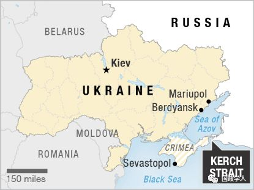

收录于合集

简 介
【作者】 沈莉华，黑龙江大学俄罗斯研究院教授。
【编辑】 高嘉琳
【审核】 陈成龙 高嘉琳
【来源】 俄罗斯东欧中亚研究2018年第3期，第79-93页。
内容摘要
为实现建立独立的乌克兰国家的梦想，1929 年乌克兰民族主义者组织成立。二战爆发前，乌克兰民族主义者组织主要是反对波兰的殖民统治。随着斯大林农业集体化政策的推行和1932～1933年乌克兰发生饥荒，乌克兰民族主义者组织开始加强反苏活动。二战开始后，乌克兰民族主义者组织把与德意法西斯合作、反对苏联当作建立独立的乌克兰国家、实现欧洲新秩序的主要手段。红军在击败德军进入西乌克兰后，采取各种措施镇压乌克兰民族主义者和乌克兰起义军，以维护乌克兰正常的社会生活秩序。班杰拉分子及其乌克兰起义军的奋斗历程折射出大国夹缝中生存的民族在实现国家独立道路上迈出的艰辛步履。

正 文
一、乌克兰民族主义者组织的兴起
9个省份的管辖权。1918年11月1日，在奥匈帝国曾经统治下的利沃夫，西乌克兰人民共和国宣告成立。1919年1月22日，西乌克兰人民共和国被并入乌克兰人民共和国版图。尽管乌克兰人民共和国领导人彼得留拉试图利用仓促组建的民族军使新生的乌克兰国家站稳脚跟，但是在波兰、苏俄、德国和协约国的博弈中，乌克兰人民共和国和民族军如昙花一现，很快消失在战争的硝烟之中。建立乌克兰国家的努力失败后，很多乌克兰人纷纷逃到德国、奥地利和捷克斯洛伐克。1920年7月，乌克兰人民共和国的上校军官叶夫根尼·科诺瓦涅茨等人在布拉格成立了乌克兰军事组织。这是一个秘密的、以建立独立的乌克兰国家为宗旨的组织。虽然乌克兰军事组织在1922年仅有约2000人，但他们都是在国内战争时期曾为乌克兰民族独立浴血奋战的职业军人，骁勇善战，经验丰富。为了壮大乌克兰民族主义者队伍，1929年初在维也纳召开的乌克兰民族主义者代表大会上，乌克兰军事组织和以西乌克兰大学生为主的激进派联合成立了乌克兰民族主义者组织(OYH)。乌克兰民族主义者组织把建立统一、独立的乌克兰国家作为最高纲领。成立之初，该组织领导人是叶夫根尼·科诺瓦涅茨，宣传处的工作由西乌克兰学生运动的领袖斯捷潘·班杰拉负责。1931年4月，斯捷潘·班杰拉组织民众上街游行，抗议波兰警察打死利沃夫大学学生的暴行。这次游行使年轻的班杰拉声名鹊起，成为乌克兰民族主义者组织的二号人物。
在谋求民族独立道路上， 乌克兰民族主义者组织希冀获得国际社会支持 。叶夫根尼·科诺瓦涅茨曾专程前往位于日内瓦的国际联盟求助，呼吁国际社会关注乌克兰人在波兰和苏联统治下的艰难处境。然而，对于乌克兰民族的命运和前途鲜有问津者。乌克兰民族主义者组织激进派认为，“如果合法的政治斗争不能达到目的，被奴役的人民有权采取革命手段来对抗国家的恐怖。”
乌克兰民族主义者组织信奉东乌克兰的侨民德·伊·东措夫的民族主义思想。1926年东措夫在利沃夫出版了《民族主义》一书，系统地提出了自己的民族主义观:在民族构成上，乌克兰民族融合了多种族成分，其中包括最优秀的日耳曼种族。与其他种族相比，日耳曼种族更善于管理国家;在民族文化上，欧洲分为拉丁—德国和莫斯科—亚洲两个相互敌对的世界。“乌克兰和白俄罗斯种族边界的东部是两个世界的分界线”，以西属于拉丁—德国、以东属于莫斯科—亚洲世界。未来的乌克兰认同欧洲文明价值观。因此，应与“俄罗斯帝国民族主义和波兰沙文主义作斗争”。在民族生存观和道德观上，东措夫指出:“政治的实质是各民族为了生存而进行达尔文式的斗争，民族之间冲突不可避免”，“手段应为目的服务，武力应战胜理性。与其观望，毋宁行动”;“强权是自然法则，扩张是肯定自我生存意志、否定他人生存意志”;“将生命看作高于一切、憎恶强盗的本性、禁止损害他人利益”是普通人的道德观，为维护民族生存而斗争必须否定普通人的道德观。关于乌克兰民族的命运和前途，东措夫强调，乌克兰民族的首要目标是实现民族独立，坚决反对乌克兰在波兰和俄国版图内实行联邦制和自治制度。
东措夫的民族主义理论成为乌克兰民族主义者组织的思想基础和行动指南 。在激进的乌克兰民族主义者看来，乌克兰是“乌克兰人的乌克兰”，未来乌克兰国家版图应西起桑河，东到北高加索山脉。在这一区域内不允许俄罗斯、波兰和犹太人等少数族裔的存在。所有非乌克兰人应当被强制同化、迁移，甚至是武力消灭;在实现民族独立道路上，所有非乌克兰民族以及反对其民族主义思想的乌克兰人都是乌克兰人民的敌人。为了实现民族独立的伟大目标，乌克兰人应当抛弃老一代人的理性和道德，采取“民族主义的铁血”政策。
二战爆发前，乌克兰军事组织和乌克兰民族主义者恐怖行动的主要对象是波兰政府官员，这与乌克兰民族主义者活动的西乌克兰局势密切相关。一战后，原奥匈帝国统治下的加里奇和沃伦部分地区被并入波兰版图，500万的乌克兰人随之成为波兰公民。虽然波兰政府曾向国联承诺，给予波兰境内的乌克兰人自治权力。但在毕苏茨基执政时期，波兰政府采取各种手段限制乌克兰人权利:很多乌克兰语学校被取缔，采用波兰语教学，乌克兰人被剥夺了用母语接受高等教育的权利。乌克兰语出版物必须经过审查;禁止乌克兰人在波兰政府中任职，剥夺乌克兰人的选举权和被选举权;对乌克兰中小企业主征收高额税收;乌克兰人的东正教堂或被捣毁，或改为天主教堂;将20万波兰人迁移到乌克兰人居住的乡村，以掠夺乌克兰人的土地。波兰政府的高压政策引起乌克兰人强烈不满，反波情绪逐渐在西乌克兰蔓延开来。
从20年代起乌克兰民族主义者就积极开展反波行动。1921年9月，乌克兰军事组织成员刺杀波兰总统约瑟夫·毕苏茨基未遂。30年代初乌克兰民族主义者组织策划了多起针对波兰政府官员的恐怖袭击事件，其中最著名事件是1934年刺杀波兰内务部长波·佩拉茨基。刺杀事件的组织者斯捷潘·班杰拉被判终身监禁。一些主张波乌和解的乌克兰人被乌克兰民族主义者视为“民族叛徒”，也成为其恐怖袭击的目标。由于该组织恐怖活动给波兰政府限制乌克兰人的合法行动提供口实，在其怂恿下一些未成年人参与恐怖袭击，结局十分悲惨，因此部分乌克兰民众和合法党派对其提出批评和指责。尽管如此，仍有不少乌克兰人，特别是境外乌克兰人同情斯捷潘·班杰拉等恐怖分子。资助该组织的多半是居住在美国和加拿大的乌克兰人。
乌克兰民族主义者组织最初并没有将苏联作为对抗的目标 。20年代布尔什维克党在乌克兰苏维埃社会主义共和国(以下简称苏维埃乌克兰)实行乌克兰化政策，乌克兰在经济、社会和文化领域取得一定成就。因此，乌克兰民族主义者的政治主张难以得到苏维埃乌克兰民众的支持和响应。1923年叶夫根尼·科诺瓦涅茨甚至与苏维埃乌克兰领导人接触，希望布尔什维克党资助其反波活动。叶夫根尼曾表示，在未来的苏波战争中将支持莫斯科，因为只有莫斯科能最终实现乌克兰领土的统一。
随着斯大林农业集体化政策的推行和 1932～1933年乌克兰发生饥荒，乌克兰民族主义者组织开始加强反苏活动。1933年11月21日，驻利沃夫的苏联领事馆工作人员阿列克谢·马伊洛夫被刺杀，这是二战前该组织唯一一次反对苏维埃政权的行动。1938年5月23日，乌克兰民族主义者组织成员、苏联内务人民委员部间谍帕韦尔·苏多普拉托夫利用与叶夫根尼会面的机会，用事先藏匿在糖果盒中的定时炸弹炸死了这位乌克兰民族主义者组织领导人。叶夫根尼的死导致该组织发生严重分裂。
1939年8月27日，乌克兰民族主义者在罗马召开代表大会，安德烈·梅利尼克成为乌克兰民族主义者组织新的领导人。对于梅利尼克的当选，很多成员并不认同，因为斯捷潘·班杰拉尚在狱中。班杰拉年轻、激进、果敢、狂热而富于冒险精神。班杰拉主张积极与布尔什维克党政权作斗争，不论时局如何变化，应尽快在苏联领土上组织武装起义。拥护班杰拉的多为因从事民族主义运动曾被关押在波兰监狱的年轻人和在西乌克兰活动的成员。班派属于乌克兰民族主义者组织的激进派，代表着生活在西乌克兰社会底层的乌克兰人。梅利尼克则沉着冷静、富有经验和文化素养。梅派的支持者多是该组织领导班子成员、老一代乌克兰民族主义者以及移居美国和加拿大的成员。从一定意义上说梅派是乌克兰侨民知识分子的代表。梅派主张将该组织的政治诉求与德国外交政策和苏德关系联系起来，对未来时局应采取观望策略，反对立即采取反苏行动。梅派认为，未来乌克兰问题将在德国的东欧政策框架下来解决。希特勒结束对英战争后，将着手制定德国的东欧政策，独立的乌克兰国家很快就会建立起来。班派属于乌克兰民族主义者组织的多数派，梅派属于少数派。
二、二战中的乌克兰民族主义者组织
（一）苏德战争前的乌克兰民族主义者组织 ****
班派与梅派的纷争既掺杂了 权力斗争 的因素，也反映了该 组织内部对欧洲时局变化和斗争策略的分歧 。德国入侵波兰后，根据苏德互不侵犯条约，1939年9月17日，苏军进入波兰，将西白俄罗斯和西乌克兰并入苏联版图。苏联政府在新兼并的乌克兰领土上强制实施苏维埃化政策。在并入苏维埃乌克兰之前，西乌克兰实行资本主义制度，批发和零售业都掌握在私人手中，生活水平远高于苏维埃乌克兰。实行苏维埃化政策后，这些私营企业主都被消灭。因此，苏维埃化政策和措施引起当地居民的不满和反抗，很多人支持班杰拉领导的乌克兰民族主义者组织。
在此背景下，获释出狱的班杰拉没有执行梅利尼克关于避免在苏维埃乌克兰西部积极开展行动，造成不必要的人员损失的命令。1940年2月，班杰拉分子在克拉科夫召开了乌克兰民族主义者组织第二次非常代表大会。大会取消了梅利尼克的命令，宣布班杰拉为乌克兰民族主义者组织的领导人。大会通过决议，明确了乌克兰民族主义者组织未来的奋斗目标:坚决同苏维埃政权作斗争，建立从伏尔加河到北高加索的乌克兰边界。对于与波兰的关系问题，大会决议中指出:“乌克兰民族主义者组织将与试图恢复波兰控制下的乌克兰土地的波兰组织作斗争。消除波兰人的反乌行动是乌波两个民族关系正常化的先决条件。”大会对于犹太人问题没有专门提及，但在谈到与“莫斯科帝国主义”作斗争时指出:“苏联犹太人是布尔什维克统治制度的忠实支柱和莫斯科帝国主义在乌克兰的先锋队。莫斯科布尔什维克政府试图利用乌克兰民众的反犹情绪转移人们对真正的灾难制造者的注意力，以及在反犹情绪爆发时利用乌克兰人屠杀犹太人。乌克兰民族主义者组织将同莫斯科布尔什维克主义制度的支柱犹太人作斗争，同时晓谕乌克兰民众:莫斯科是主要敌人。”显然，乌克兰民族主义者组织将莫斯科和波兰视为主要敌人。正如30年代乌克兰民族主义者在歌中唱的那样:“消灭血腥的莫斯科和华沙。”
在从事反苏活动同时，该组织与德国侦察机构“阿伯韦尔”建立了密切联系。很多乌克兰民族主义者认为，只有在德国的帮助下建立独立乌克兰国家的目标才能实现。而德国人试图利用乌克兰民族主义者组织进行反苏间谍活动和武装起义。乌克兰民族主义者组织将总部设在柏林，并在利沃夫成立了具体负责西乌克兰活动的领导机关。利沃夫的领导机关被苏联安全部门破获后，该组织在克拉科夫成立了由班杰拉负责的领导机关。克拉科夫的领导机关与德国情报机构直接联络。档案文献证实，至少从1932年起乌克兰民族主义者组织已经与德国侦察机构建立联系。希特勒上台后，盖世太保利用乌克兰民族主义者为其提供情报，每月向其提供7000马克活动经费，如果执行其他任务，资金另行拨付。出于反苏策略考虑，1934年德国与波兰关系实现正常化。乌克兰民族主义者组织重要成员尼古拉·列别季等被德国人出卖给波兰政府。尽管如此，该组织与德国情报部门的联系并未中断。1940年2月乌克兰民族主义者组织分裂成班派和梅派后，德国人仍继续支持乌克兰民族主义者组织，两派从德国人那里各收到250万马克。
1940年7月纳粹分子利用乌克兰民族主义者组建了“罗兰”和“夜莺”营，作为德军的特别行动队。“夜莺”营负责人是班派在德国占领下的波兰总督区领导人罗曼·舒赫维奇，而“罗兰”营基本由梅派分子组成。根据德国政府的指示，在波兰总督区乌克兰民族主义者组织利用设在各地的委员会对乌克兰居民进行登记，并对所有登记在册的乌克兰居民发放专门证件，作为居住和领取口粮的凭证。德国人任命乌克兰民族主义者担任市长、乡长和村长等各级官员;建立乌克兰警察机构，招收乌克兰民族主义者组织成员;招募该组织成员与德军共同维持边境治安;允许该组织征召16～42岁的志愿者参加乌克兰人的军事组织。
在整个1940年，班派的工作重心是在西乌克兰发动反苏武装起义。在德国的帮助下，该组织位于克拉科夫的领导机关将经过培训的成员秘密输送到乌克兰西部各州，并恢复在利沃夫等地的地下组织。乌克兰民族主义者组织还制定了夺取苏联政府机关、消灭工作人员和内务部警察的具体行动计划。
对于乌克兰民族主义者组织的反苏活动，苏联政府采取了严厉镇压措施。1940年苏联捣毁了包括乌克兰民族主义者组织位于利沃夫的领导机关在内的很多据点。据苏联内务部统计，仅在1940年12月的一次行动中就逮捕该组织成员996人。1941年1～6月份，内务部从西乌克兰迁移出各类社会危险分子3079户，共计11329人。镇压行动给乌克兰民族主义者组织带来沉重打击，为了保存实力，克拉科夫的领导机关下达指示:取消已进入内务部视线的人员活动计划;每个地区只留下两名负责人，其余工作由处于合法状态的成员来承担;将已经暴露身份的干部秘密输送到国外。大多数成员在偷越国境时被苏联方面截获。尽管如此，乌克兰民族主义者组织仍继续开展秘密斗争，并很快恢复了各地的基层组织。苏德战争爆发前，其成员已遍布西乌克兰各个地区。
（二）苏德战争前期的乌克兰民族主义者组织 ****
在苏德战争爆发的第二天，乌克兰民族主义者组织向德国方面递交了一份以斯捷潘 ·班杰拉名义写给希特勒的信。信中说:“乌克兰民族主义者组织深信，目前进军莫斯科将消除腐朽的犹太—布尔什维主义在欧洲的影响，并最终消灭俄罗斯帝国主义。根据布列斯特—立托夫斯克和约恢复独立的乌克兰民族国家将巩固东欧国际新秩序，并推动这一空间的和平和顺利发展。我们相信，阁下作为国际秩序的维护者将支持我们人民的斗争。”
1941年6月30日，德国军队占领了利沃夫。班杰拉分子在利沃夫宣布建立独立的乌克兰国家，并发布了乌克兰独立国家宣言。宣言称:“重新复国的乌克兰将与伟大的纳粹德国密切合作。阿道夫·希特勒领导的伟大的纳粹德国正在建立欧洲和世界新秩序，并帮助乌克兰人民从莫斯科占领下获得解放。即将在乌克兰土地上建立的乌克兰民族革命军今后将与德国盟军共同为反对莫斯科侵略，为主权独立的乌克兰国家和世界新秩序而斗争。”
7月3日，乌克兰政府总理雅罗斯拉夫·斯捷齐科致信墨索里尼:“乌克兰 政府以乌克兰人民的名义向阁下表示诚挚欢迎，对阁下英雄军队的胜利远征表示由衷的高兴。希望阁下英勇的人民将很快取得完全胜利，我们坚信:在取代凡尔赛体系的公正的法西斯秩序中乌克兰国家将占有应有的地位。”
乌克兰民族主义者组织把与德意法西斯合作、反对苏联当作建立独立的乌克兰国家，实现欧洲新秩序的主要手段。在苏德战争开始后，乌克兰民族主义者组织立即行动起来，在西乌克兰组织了近万人的武装力量，很快投入战斗。他们采取破坏行动，切断红军各部队之间的联络，配合德国军队袭击撤退的红军和犹太人。据统计，在战争开始后的最初几周，红军和内务部队的官兵死亡2100人，受伤900人。1941年7月1日，一支德军先头部队通报说:班杰拉分子在6月30日至7月1日采取了大规模排犹行动。据统计，在红军离开利沃夫的最初日子里有近4000犹太人被打死。
乌克兰民族主义者针对红军和犹太人采取的行动很大程度上是为了报复。1941年5月20日，乌克兰国家安全部在西乌克兰逮捕了1713名涉嫌参加乌克兰民族主义者组织成员，并从乌克兰西部各州驱逐4424户，共计14316人。在德军的进攻下，红军匆忙撤离，契卡工作人员及其家属也随着转移。但是关押在乌克兰西部各州监狱中的犯人成为乌克兰内务部面临的难题。为了不让这些犯人落入德军和乌克兰民族主义者手中，乌克兰内务部对其实施了代号为“一级行动”的大屠杀。乌克兰国家安全部副委员伊·马·特卡琴科下令枪决关押在切尔特科夫市监狱的767名已经判刑和尚未定罪的犯人。红军撤离后，乌克兰人打开利沃夫所有监狱，到处是被契卡工作人员枪杀的犯人尸体。在隆斯克大街监狱，人们发现了尤利娅·舒赫维奇的尸体。其兄正是“夜莺”营的指挥官罗曼·舒赫维奇。
布尔什维克党枪杀乌克兰人在德军有关乌克兰战况的通报中也有记载。1941年7月16日，一支德军向上级汇报:“布尔什维克在撤离之前和当地的犹太人杀死一些乌克兰人。理由是他们试图在1941年6月25日在利沃夫举行武装起义，以释放被关押的乌克兰囚犯。据可靠消息，在利沃夫约有2万人失踪，其中80%以上是知识分子。在利沃夫的监狱，被残害的乌克兰人尸体随处可见。初步估计，在利沃夫遇害的乌克兰人有3000～4000人，其他人被转移。”
班杰拉分子积极配合德军的反苏行动，对于纳粹德国在乌克兰独立问题上的态度充满期待。但班杰拉分子很快发现，德国并不欢迎独立的乌克兰国家。1941年7月3日，德国军政长官库恩德特约见班杰拉，希望班杰拉及其追随者不要急于宣布乌克兰政府成立。他还示意班杰拉:在没有征得德国政府同意的情况下任何人都不能“自行其是”。班杰拉则表示，乌克兰民族主义者组织把德国当作反苏盟友，在行动中并不想违背德国人的利益，但必须声明:“我只是受乌克兰人民之托，而非依据德国机构的指令或征得德国机构的同意下达任何命令。”1941年7月班杰拉及其追随者被德军逮捕，软禁在柏林，后被投入集中营。1941年9月，盖世太保开展了针对班派的大搜捕行动，约有1500名班派分子被逮捕和枪杀。乌克兰独立政权被取消，取而代之的是由德国人全权负责的行政机构。
梅派也难逃镇压的命运。与坚决主张乌克兰独立的班派相比，梅派人数较少，组织不够严密。梅派曾多次致信德国驻乌克兰占领区代表，甚至致信希特勒，向其表示善意和忠诚，希望彼此合作。但是，梅派也主张建立某种形式的乌克兰国家。1944年2月28日，在柏林合法居住的安德烈·梅里尼克被德国安全局逮捕，并关进班杰拉所在的萨克森豪森集中营。到1944年初，德国安全局逮捕了几乎所有梅派中央机构的领导人，以及数百名乌克兰境内外的梅派分子。
（三）苏德战争后期的乌克兰民族主义者组织 ****
斯大林格勒战役后，红军战线逼近德军占领下的乌克兰，苏联游击队在这一地区开始活跃起来。为了适应新形势需要， 1943年2月17～23日，在利沃夫州召开了班派第三次代表会议。会上虽然有人提出应将反德斗争作为乌克兰民族主义者组织当前的行动目标，但考虑到数百万红军出现在东部乌克兰，此时任何反德行动客观上都是对苏联的支持，因此与会的大多数代表支持罗曼·舒赫维奇的建议，将苏联游击队和波兰人作为武装斗争的主要对象。1943年春，班派组建了自己的武装力量———乌克兰起义军(УПА)。乌克兰起义军最初人数只有几千人，活跃在沃伦和斯维纳尔斯克等地的丛林中。为了加强这支队伍的战斗力，1943年5月乌克兰起义军成立了总指挥部。起义军分为西北、北方、南方和东方行动组。保守估计，乌克兰起义军正规军人数为5万～8万人。
从乌克兰起义军成立到二次大战结束，乌克兰起义军的军事行动主要分为三方面。首先，反对苏联红军和游击队。1943年末至1944年初，随着红军到达乌克兰起义军的活动区域，乌克兰起义军开始和德军合作抗击红军。他们时而出现在红军前沿阵地，时而袭击红军后方，并把有关红军的情报通报给德军。1944年1月7日至3月2日，在罗文州和沃伦州有记载的乌克兰起义军袭击红军和游击队事件有200起。乌克兰第一方面军司令瓦杜金将军在一次伏击中因伤势过重牺牲。因破坏红军主要交通线，从1944年4月起，乌克兰起义军遭到红军和内务部队的严厉镇压。在沃伦的一次战斗中，3万苏军与5000～6000乌克兰起义军对阵，结果3600多名乌克兰起义军被打死。南方行动组遭受重大损失，幸存下来的人员被并入西方和北方行动组。1944年7～8月间，当红军向西部挺进，部分战线移出乌克兰西部各州后，乌克兰起义军重新活跃起来。他们伏击红军，抢劫军火库，破坏交通线和粮食供应。据统计，从1944年至1956年，乌克兰起义军的行动共造成3199名红军、内务部队和边防军的死亡。
其次，反对波兰。1943年夏，乌克兰起义军为了配合德国军队的“反殖民化运动”，强迫波兰居民在48小时之内离开自己的家园。而在沃伦秘密活动的波兰军队根据伦敦波兰流亡政府的指示禁止波兰人离开沃伦地区。结果，约有4万～10万波兰居民惨遭杀戮。除了波兰人外，被他们打死的还有俄罗斯人、捷克人和犹太人。乌克兰起义军手段十分残忍，他们将怀孕妇女锯成两半，把孩子刺死在餐桌旁。为了将野兽行径嫁祸于苏联游击队，起义军战士在一些村子里高唱喀秋莎，用俄语骂人。波兰军队同样以恐怖行动进行报复，结果导致1万～1.5万乌克兰人死亡。
最后，反对德国占领当局。1943年8月召开的乌克兰起义军会议虽然提出在反苏和反德两条战线同时作战的口号，但苏联被视为主要敌人。因此，这一时期乌克兰起义军反德斗争有两个明显特点:一是双方基本没发生大规模武装冲突。鉴于德军控制着乌克兰的主要交通线和居民点，1943年下半年乌克兰起义军对德作战的目的在于占领德军力量薄弱的沃伦和波多利亚农村的大部分地区。二是乌克兰起义军行动对德军没有构成太大威胁。乌克兰起义军主要阻止德军进攻其控制的领土;抢夺德军的武器弹药和粮食;反对其驱使青壮劳动力去德国。1943年8月，乌克兰起义军甚至与德军就联合与游击队、红军作战事宜进行谈判。乌克兰起义军承担的任务是:“1.保护铁路线防止游击队的进攻;2.恢复同游击队的斗争;3.支持并执行德国人采取的所有措施。”乌克兰起义军提出的条件是:“1.释放班杰拉;2.武装乌克兰民族主义者，今后应向其提供武器和弹药援助;3.保证建立独立的乌克兰国家。”双方就上述问题达成协议后，乌克兰起义军停止对德作战，并对游击队采取积极行动。德军则开始向乌克兰起义军供应武器弹药。截至1944年9月，德军向乌克兰起义军南方行动组转交了700多枚地雷、1万挺机枪、2.6万支冲锋枪、2万支步枪、10万枚手榴弹等武器弹药。1944年9月25日，班杰拉及其300名追随者被德军从集中营释放。
三、乌克兰起义军的覆灭
**
**
红军在击败德军进入西乌克兰后，采取各种措施应对乌克兰民族主义者和乌克兰起义军，以恢复西乌克兰正常的社会生活秩序。 首先，对乌克兰起义军采取大规模清剿行动 。从1945年1月1日至5月1日，苏联内务部采取清剿行动共计6519次，击毙班派分子31157人，俘虏40760人，自首23166人，消灭起义军头目1365人。1944年12月，在西乌克兰128名乌克兰民族主义者被处以绞刑，对乌克兰起义军起到了震慑作用。“在判决执行地区匪患现象明显减少。被逮捕的匪徒证实，很多匪徒士气低落，大有穷途末路之感。”
其次，清查乌克兰民族主义者人数，强制迁移乌克兰起义军家庭 。1945年1月至2月上旬，在乌克兰西部各州农村开始对15岁以上的居民进行清查，以查清乌克兰起义军人数。苏联政府警告西乌克兰民众:对乌克兰民族主义者提供帮助的人将采取严厉措施，直至强制性迁移。截至1945年4月15日，从西乌克兰共迁移9036户，23660人。
再次，加强对西乌克兰民众的宣传和教育工作 。针对西乌克兰苏共政治工作主要集中在城市和周边乡镇，边远地区居民点宣传教育薄弱的实际，苏联政府向西部各州派去了大批党员和积极分子。从1944年末至1945年2月10日，苏联从乌克兰东部各州向西部派出4.8万人。其中2.2万人是共产党员和积极分子。乌共中央委员会还向西部居民发出呼吁书。呼吁书号召乌克兰居民支持苏维埃政府恢复正常的生活秩序，同乌克兰—德国民族主义者作斗争，并宣布赦免所有到苏维埃政权机关自首的乌克兰民族主义“匪帮分子”。呼吁书起到了积极效果，一些民族主义者开始向苏维埃政府机关自首。一名乌克兰民族主义者称:“我们的斗争毫无意义，苏维埃政权很强大，应当终止活动，转向和平生活。”另一名乌克兰起义军分子也表示:“在乌克兰起义军匪帮中人心浮动，大多数人明白，首领欺骗了他们，很多人有意投案自首。”
最后，重视西乌克兰的基层组织和谍报工作 。为了严打乌克兰民族主义者组织，苏维埃政权在乌克兰西部各州、区利用当地民众成立了约5万人的歼击营。这些民众熟悉周围的地形条件，有同乌克兰民族主义者打交道的经验。农民还组织了自卫队来维护村庄安全。苏联内务部在各居民点建立广泛的谍报网，以摸清乌克兰民族主义者的行踪和作战意图。从1945年1月10日至2月10日，仅一个月党的机关、内务部和安全局在行动中就击毙乌克兰民族主义者8630人，抓获6346人，自首7354人。
在苏联政府的严厉镇压下，班杰拉分子活动几乎处于瘫痪状态。班派分子在文件中说:“村子里人心涣散，无论是有组织、还是没组织的男人全都去参加红军。在村子里几乎无法开展工作，即使是过去的线人也无法进行联络，没地方过夜。我们的队伍被击溃、打散了，不知何去何从。由波兰人组成的歼击营的战士在村子里四处游荡，肆意侮辱班杰拉分子。布尔什维克对我们十分敌视，已经牺牲了很多人。”
需要指出的一点是， 苏联政府也曾试图通过谈判解决乌克兰民族主义者组织和乌克兰起义军问题 。在1945年2月苏联政府和乌克兰民族主义者组织代表举行的谈判中，乌克兰民族主义者组织提出的第一个条件是:“实施乌克兰苏维埃社会主义共和国宪法第4条，即乌克兰退出苏联。”乌克兰起义军的代表塔拉斯表示:“乌克兰如果作为苏维埃社会主义共和国联盟的一部分，将和沙皇时期一样受到俄罗斯人的压迫，只有在完全独立的前提下乌克兰国家和乌克兰人民才能获得自由发展。”起义军另一位代表布歇尔说:“基辅远早于莫斯科成为具有世界意义的文化中心，而失去这一地位仅仅是俄罗斯帝国主义毁灭了乌克兰的一切。乌克兰人民应当努力恢复基辅的荣耀和世界文化中心的地位。乌克兰应当成为独立的国家，乌克兰人民应当为世界文化做出自己的贡献，所有这些只有在乌克兰获得完全独立的前提下才能实现。”苏联政府的代表达尼连科直接拒绝了乌克兰退出苏维埃社会主义共和国联盟的要求:“如果乌克兰不作为苏维埃社会主义共和国联盟一部分与俄罗斯和其他民族结成联盟，乌克兰会怎样?乌克兰早就灭亡了，数百年都将成为奴隶或德国的殖民地。是我们统一了乌克兰领土，并且不是彼得留拉和你们国歌中所唱的‘从桑河到顿河’，而是从外喀尔巴阡山到顿河。……你们凭什么要与我们作斗争?”由于谈判双方缺乏相互信任，谈判条件相距甚远，即将赢得战争胜利的苏联政府难以作出实质性的让步，谈判无果而终。
对德战争结束后，苏联政府集中兵力清剿乌克兰起义军。斯大林下令将大量俄罗斯人迁移到乌克兰。苏军内务部还组成特别小组，专门对西乌克兰人口进行登记，将乌克兰起义军成员的家庭全部流放到西伯利亚。1959年10月15日，隐匿在德国多年的乌克兰民族主义者组织领导人斯捷潘·班杰拉被克格勃间谍用喷射手枪毒杀。
四、结 论
**
**
乌克兰民族主义者组织 (班派)是矢志不渝为乌克兰国家独立而浴血奋战的政治、军事组织。 在 “ 乌克兰是乌克兰人的乌克兰”口号下，任何试图阻碍乌克兰独立的国家、组织和个人都是乌克兰民族主义者组织的敌人。班杰拉分子的政治主张决定了俄罗斯人、波兰人和犹太人，甚至主张乌克兰在波兰和苏联版图下实行高度自治，以及谴责班派分子恐怖暗杀行动的乌克兰人都成为其不共戴天的敌人。二战开始后，西乌克兰的苏共、内务、安全部门的工作人员，以及与苏维埃政权合作的犹太人及其家属都成为班派分子袭击与杀戮的主要对象;在通往民族独立的道路上，任何可以合作的国家和政治力量均有可能成为乌克兰民族主义者组织的盟友。部分俄罗斯学者认为，班杰拉分子将纳粹德国视为“天然盟友”，在整个第二次世界大战期间，双方一直保持密切合作关系。而档案文献充分证实:乌克兰民族主义者认为，处于波兰和苏联统治下的乌克兰只有借助德国的帮助才能实现国家独立的伟大目标。尽管早在二战前乌克兰民族主义者组织就与纳粹德国建立了合作关系，但当希特勒对主张国家独立的乌克兰民族主义者组织展开大规模镇压行动后，班杰拉分子才清醒意识到德国人的真正意图。此后，班派分子和乌克兰起义军与德国人的合作多半是权宜之计，基于联合反苏的需要。二战后期，当意识到纳粹德国行将灭亡，苏联将赢得战争的最后胜利时，班杰拉分子转而寻求新的盟友，试图与英美等国合作来对抗苏联。对于乌克兰民族主义者，特别是班派分子及其家属，苏联政府采取严厉的镇压措施，进一步恶化了乌克兰民族主义者与苏维埃政权的关系。
拂去历史的尘埃，呈现在我们眼前的是以激进方式谋求乌克兰独立的民族主义组织和一支在丛林中艰难跋涉的乌克兰起义军队伍。无论是今天很多乌克兰人眼中的民族英雄，还是俄罗斯人眼中纳粹德国的“走狗”和“帮凶”，班杰拉分子及其乌克兰起义军的奋斗历程折射出大国夹缝中生存的民族在实现国家独立道路上迈出的艰辛步履。他们留给世人的每一个脚印是那样的沉重，甚至血腥。每一个历史印记似乎都在昭示和平的弥足珍贵:与其谴责战争中的人性，毋宁反思战争的根源、铭记战争的残酷，是战争把人变成嗜血成性的机器。乌克兰民族主义者与苏维埃政权的矛盾和斗争只是俄乌历史积怨的一个缩影。如果俄罗斯与乌克兰不能真正走出历史的阴霾，没有人知道，俄乌和解、合作的春天何时到来。
本文注释及参考文献省略
更多阅读
【重磅新著】阎学通：Leadership and the Rise of Great Powers刚刚出版！
【学术随笔】唐世平：迈向“深度多元主义”的“全球国际关系（学）”
【最新评论】江忆恩：不稳定的基础：特朗普对华政策的“知识结构”——对《百年马拉松》的评论 | 国政学人
【地区秩序】阿米塔夫·阿查亚：权力转移还是范式变化？中国崛起与亚洲新兴安全秩序 | 国政学人
【名家之言】米尔海斯默、斯蒂芬·沃尔特：离岸平衡案例研究——美国的超级战略
【FA重磅】米尔斯海默等：离岸平衡手——美国优越的大战略 | 国政学人
国政学人 （ID：guozhengxueren)
为方便学人及时阅读高质量文章
别忘把国政学人设置 星标 哦~